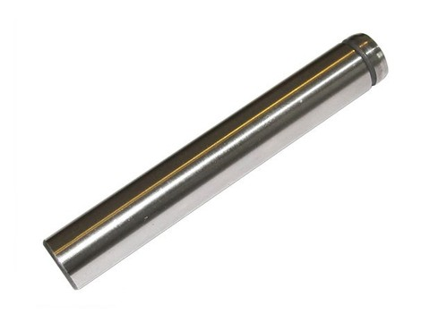
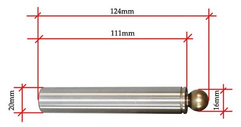
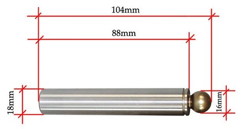
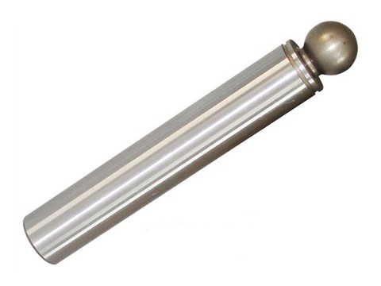
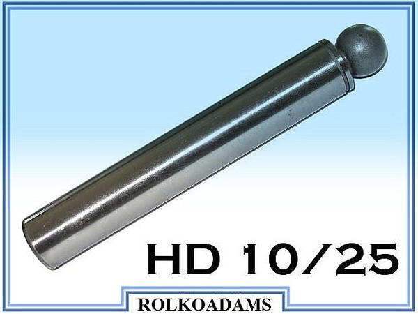
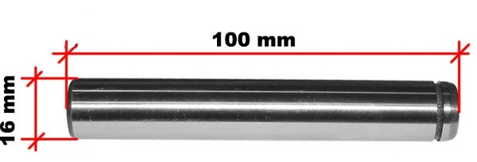
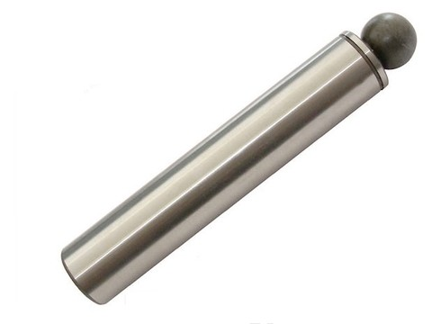
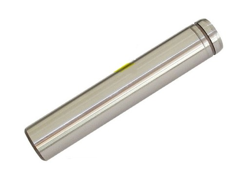
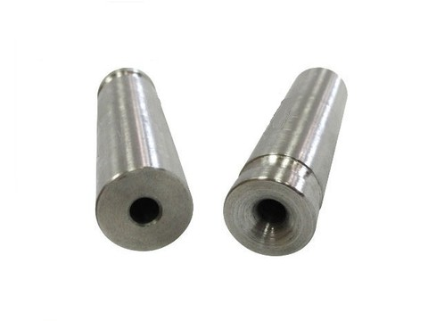

Nasza oferta:

TŁOK GŁOWICY MYJKI KARCHER:
Wytrzymały tłok z najwyższej jakości materiału.
Pasuje do myjek KARCHER HD 6/13 oraz 5/12.
Wymiary tłoka: średnica 12mm, długość 81mm

TŁOK GŁOWICY MYJKI KARCHER:
Wytrzymały, fabrycznie nowy tłok do głowicy myjki KARCHER z najwyższej jakości materiału. Pasuje do myjki KARCHER : HDS 690 (trzy-tłokowego). Nadaje się również do myjek HDS o numerach: 760, 810, 890, 990.

TŁOK GŁOWICY MYJKI KARCHER:
Wytrzymały, fabrycznie nowy tłok do głowicy myjki KARCHER z najwyższej jakości materiału. Pasuje do myjek KARCHER: HDS 600, HDS 695, HDS 790, HDS 795, HDS 797, HDS 895, HDS FARMER, HD 890 oraz wszędzie tam gdzie tłoki mają podane na rysunku obok wymiary.

TŁOK GŁOWICY MYJKI KARCHER:
Wytrzymały, fabrycznie nowy tłok do głowicy myjki KARCHER z najwyższej jakości materiału. Pasuje do myjek KARCHER: HD 1090, HD 1094, HD 994, HD 9/20 oraz wszędzie tam gdzie tłoki mają podane wymiary:
Długość: 129mm, Średnica: 20mm, Średnica główki: 18mm.

TŁOK GŁOWICY MYJKI DO KARCHER:
Wytrzymały tłok z najwyższej jakości materiału. Pasuje do myjki KARCHER HD: 10/25, 10/23, 10/22, 10/21, 10/20 oraz HDS: 10/20-4M, 11/18-4S, 10/19-4M.

TŁOK GŁOWICY MYJKI DO KARCHER:
Wytrzymały tłok z najwyższej jakości materiału.
Pasuje do myjek KARCHER: HDS 600, HDS 695, HDS 790, HDS 795, HDS 797, HDS 895, HDS FARMER, HD 890.

TŁOK GŁOWICY MYJKI KARCHER:
Wytrzymały, fabrycznie nowy tłok do głowicy myjki KARCHER z najwyższej jakości materiału. Pasuje do myjek KARCHER: HDS 995, HDS 1195, HDS 1295, HDS 2000 SUPER, HDS 3000, HDS 695 VEX, HDS 1291 ST, HDS 12/14 ST ECO, HDS 891 ST oraz HD 1290, HD 1294, HD 6/16 ST, HD 9/16 ST, HD 13/12 ST. Wymiary:
Długość: 130mm, Średnica: 22mm, Średnica kuli: 18mm.

TŁOK GŁOWICY MYJKI KARCHER:
Wytrzymały, fabrycznie nowy tłok do głowicy myjki KARCHER z najwyższej jakości materiału. Pasuje do myjek KARCHER: HDS 698, HDS 558, HD 645, HD 650, HD 690, HD 658 oraz wszędzie tam gdzie tłoki mają podane wymiary: Długość: 76,5mm, Średnica: 14mm.

TULEJA ZESTAWU DO HYDROPIASKOWANIA:
Tuleja zestawu do hydropiaskowania do myjek serii HD/HDS firmy KARCHER.